HELLO, I’M OH SEUNG-MYUNG
나는
복기하는
기획자 입니다.
오늘의 반성이 성장한 내일의 저를 만든다고 생각합니다.
과거의 선택과 실수를 돌아보며 배우는 기획자입니다.
복기 · 구조 · 개선GAME DESIGNER
Welcome to my desktop
HELLO, I’M OH SEUNG-MYUNG
오늘의 반성이 성장한 내일의 저를 만든다고 생각합니다.
과거의 선택과 실수를 돌아보며 배우는 기획자입니다.
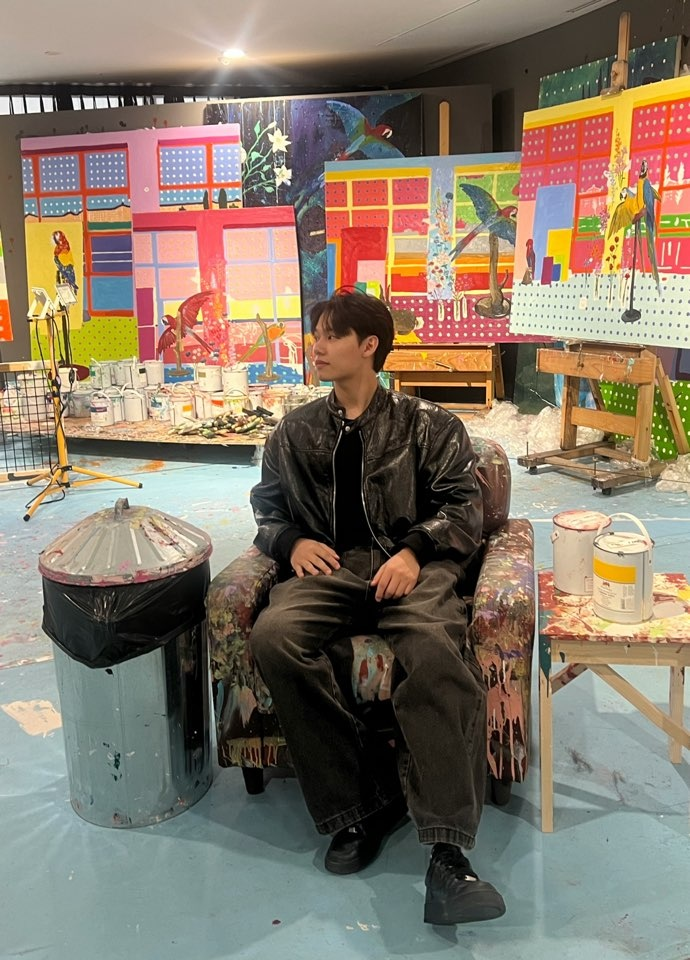
SELECTED WORKS
기획 의도를 정리하고, 함께 만드는 사람들과 기준을 맞추며 프로젝트를 완성했습니다.
폴더를 열어 프로젝트와 제가 맡은 역할을 살펴보세요.
각 제품명과 로고는 해당 소유자의 상표입니다. 이 표시는 사용 경험을 설명하기 위한 것이며 후원 또는 제휴를 의미하지 않습니다.
게임을 소비한 시간이 아니라, 무엇을 관찰하고 어떤 질문을 남겼는지 보여주는 공간입니다.
2015—2024 · 최고 티어 Gold
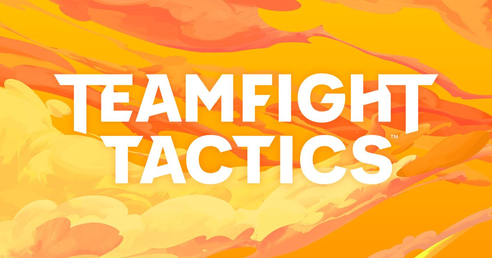
2024—현재 · 최고 티어 Emerald

1,141시간 · 오픈월드 액션 어드벤처

458.5시간 · 액션 RPG / 헌팅
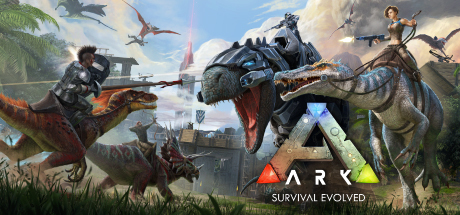
206.6시간 · 오픈월드 생존 샌드박스
 01
01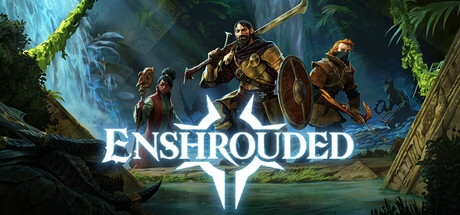
02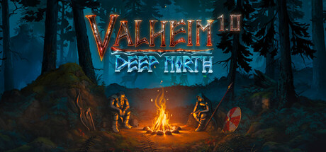
04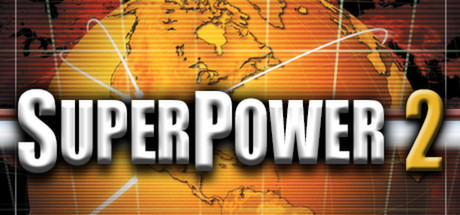
05 06
06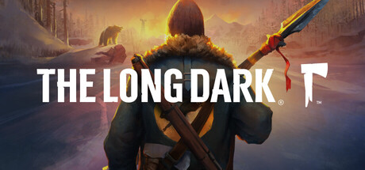
07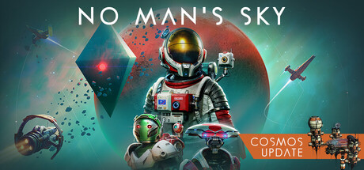
08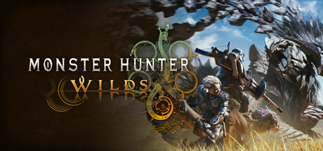
09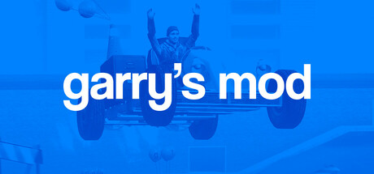
10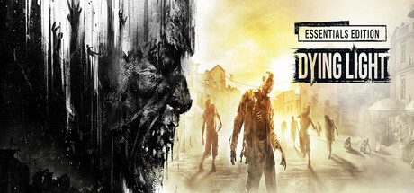
11 12
12 13
13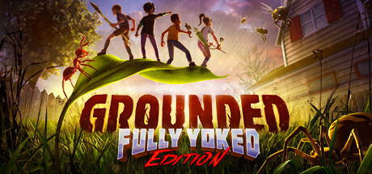
14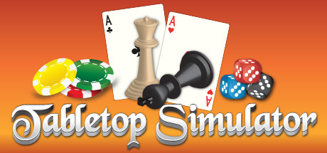
16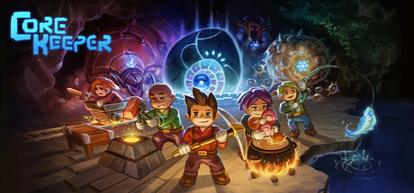
17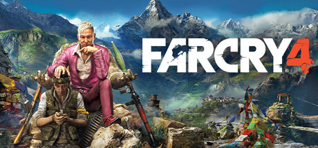
18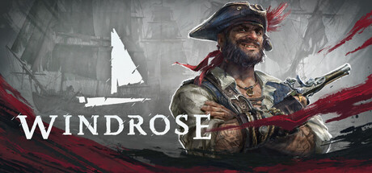
19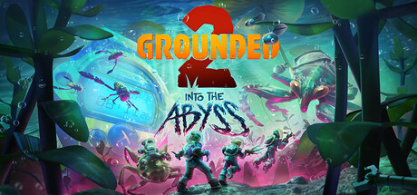
20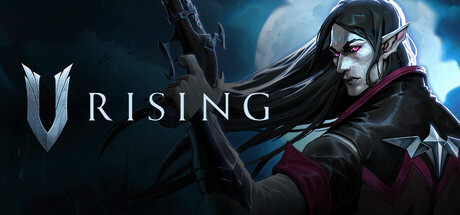
21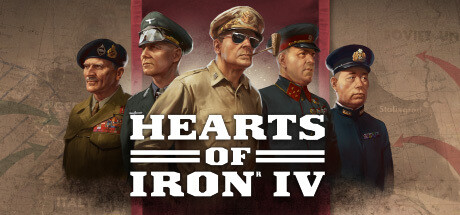
22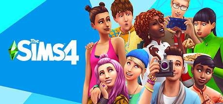
23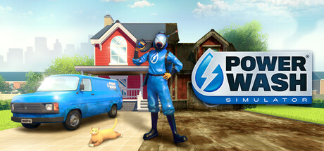
24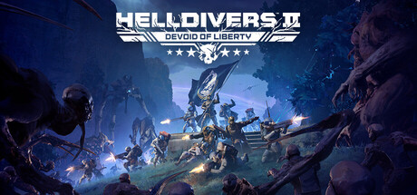
25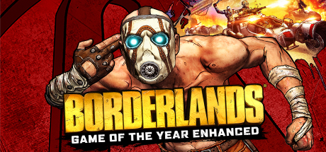
26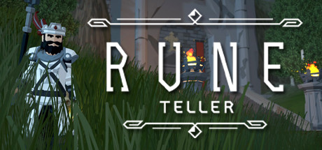
27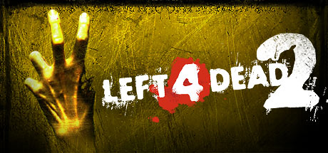
28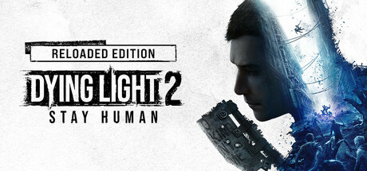
29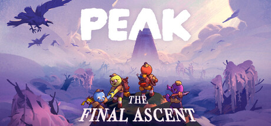
30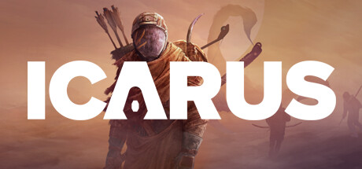
31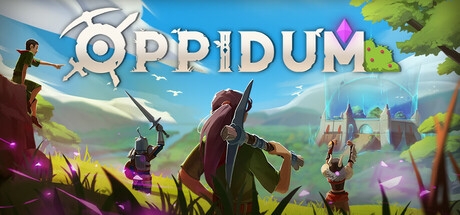
32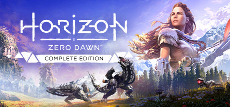
33 34
34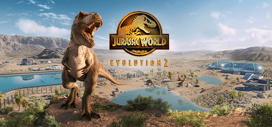
35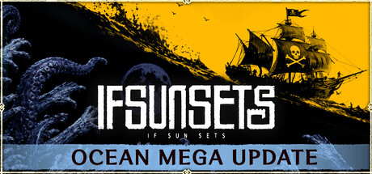
36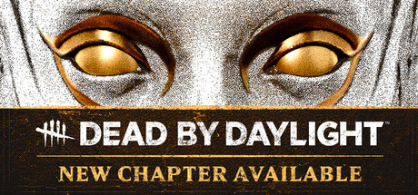
37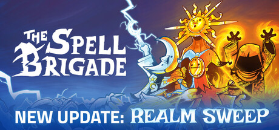
38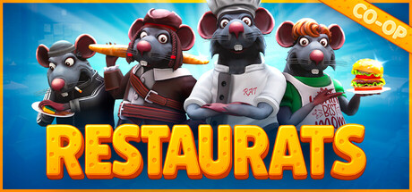
39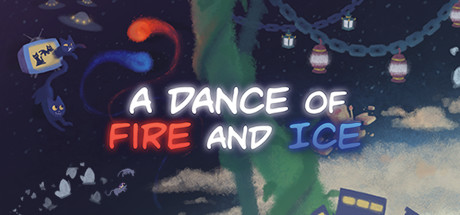
40 41
41